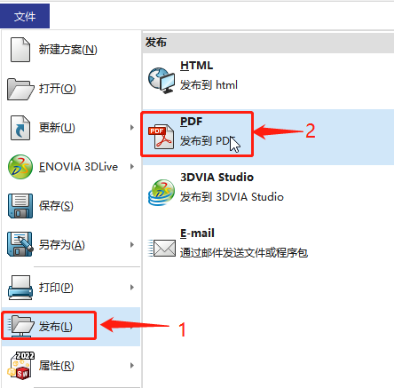
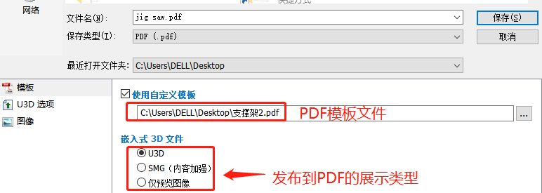
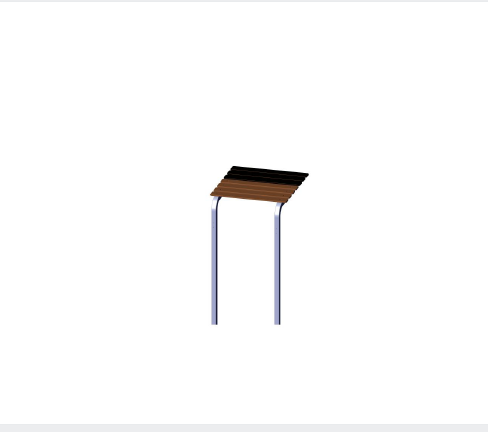

SOLIDWORKS Composer 发布 PDF：
说明介绍 SOLIDWORKS Composer 在发布 PDF 时的一些操作。
制作 PDF 模板
默认无模板情况下发布，输出结果是一份只显示 Composer 界面的 PDF 文件。此时文件内并不包含其他文字等说明内容。所以我们需要通过先制作一份 PDF 模板用来填入文字内容等。
你可以先在 Word 文档编辑排版，并另存为 PDF 格式。在 PDF 文件中需要通过工具创建一个按钮，以用作嵌入式 Composer 文件的占位符。按照以下步骤添加按钮，并将 Composer 文件导入 PDF。
以 Adobe 的 PDF 为例。在 PDF【富媒体】工具里”添加按钮”，划分出排版预留的位置，作为接收 Composer 文件的区域。按钮的域名称填：”SeemageReplace”。
完成后保存即可。
发布 PDF 文件
【文件-发布-PDF】进行 Composer 文件的发布。
在保存的弹窗里选择使用自定义模板。PDF 有三种类型的发布，下面是对几种 PDF 输出的展示类型说明：
仅预览图像：
将当前视口的快照作为 2D 图像嵌入 PDF 文件。
U3D：
使用 Universal 3D (U3D) 格式将 3D 内容嵌入 PDF
文件，该格式是一种用于可视化和发布的开放式标准格式。使用 Acrobat U3D
界面查看 U3D 内容，然后查看功能。指定 U3D 选项页面上的其他选项
SMG（增强内容）
使用 Composer SMG 格式将 3D 内容嵌入 PDF 文件。SMG 格式为用户提供丰富的
Composer 体验，类似于 Composer 创作环境。
（注意：需要安装适用于 Adobe Acrobat 的免费 Composer 插件才能查看 3D
内容。安装 Composer Player
也会安装插件文件 PlayerControl.dll 和 PlayerReader.api。文件的位置取决于所安装的应用程序（Composer、Adobe
Reader 或 Adobe Acrobat）。
如果文件已安装在 Composer 目录下，则您必须将这些文件复制到 PDF 目录。
1 | Composer 目录:<Composer_install_dir>\Plugins\Acrobat\Reader\Plug_Ins |